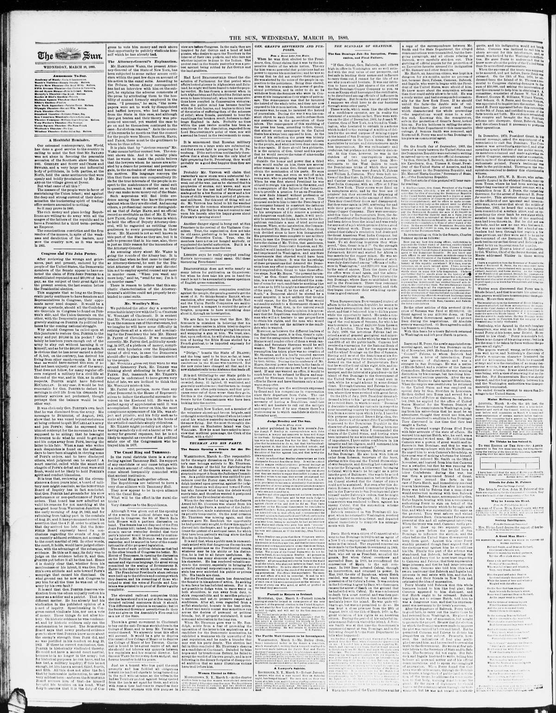

THE SCANDALS OF GRANTISM.
https://www.loc.gov/resource/sn83030272/1880-03-10/ed-1/?sp=2

See the original pageVer la página original
The San Domingo Job—Its Inception, Prosecution, and Final Failure.
I.
“If Gen. Grant, Gen. Babcock, and others high in office in Washington are so well satisfied with the real value of our prospects, and feel safe in lending their names and influence to carry them out, I cannot for the life of me see why you should hesitate. It was our intention to have sent 1,200 shares of the stock of the San Domingo Copper Company to you, as soon as Knapp shall have signed the certificates, to be distributed among officials of influence in Washington. But from the tone of your letters I suppose we shall have to do our business through some other party.”
These words, which seem like the idle boast of a confidence operator, are in reality the statement of a scandalous fact. They were written on the 21st of December, 1866, by Joseph W. Currier, then of New York, to a friend in Washington, who hesitated to embark in a scheme which looked to the raising of a million of dollars for the avowed purpose of mining copper in the island of San Domingo. Currier had been a quartermaster in the Union Army. He was speculative by nature, and circumstances made him impecunious. He was enthusiastic and credulous, but perhaps not deliberately dishonest. At this time, however, he was in the clutches of two unscrupulous knaves, who, years before, had gone from Massachusetts to the West Indies to teach the Dominicans tricks of which they never dreamt before. These were Joseph W. Fabens and William L. Cazneau. They were both natives of the Bay State. In 1863, Fabens, Cazneau, and Currier established the Great American West India Company, with an office at 5 Pine street, New York. Their rooms were fitted up in sumptuous style, and by the free use of printers’ ink they succeeded in disposing of their worthless stock to the amount of $160,000. Then they closed their doors and disappeared. But they came again in 1866, scattering far and wide their prospectus of the Great San Domingo Copper Company. They were accompanied this time by Buenaventura Baez, the deposed President of the Dominican Republic, who had been driven from the island and was ready for any sort of a job which promised him a good living without work. These conspirators explained that Cabral’s revolution had destroyed the Great American West India Company, but that the present corporation rested on a secure basis. To all doubting inquirers they whispered, “Gen. Grant is in it!” On the strength of his name they raised money from investors. Fabens took $30,000 and started for Africa to buy camels for the copper mines. He was accompanied by Baez. The 1,200 shares of stock were duly distributed among “officials of influence in Washington,” and $200,000 was raised by the sale of shares. Then the doors of the the office were closed again, and the adventurers sought safety in flight. They returned to San Domingo, where Baez reëstablished himself in the Presidency. There they remained till President Grant was inaugurated, and then they began once more their swindling operations in good earnest.
How to cite this articleCómo citar este artículo
The Sun. (1880). New York [N.Y.], March 10, 188010 de marzo de 1880. DR in the American PressRD en la Prensa Norteamericana. Library of Congress, Chronicling America: https://www.loc.gov/resource/sn83030272/1880-03-10/ed-1/?sp=2
ReferencesReferencias
Library of Congress, Chronicling America: The Sun, March 10, 188010 de marzo de 1880.
Send an observationEnviar una observación
Does this article connect with your family, your town, or something you know? Did we get something wrong? Write to us. Observations go to the editor's inbox and are read by a person.¿Este artículo conecta con su familia, su pueblo o algo que usted conoce? ¿Nos equivocamos en algo? Escríbanos. Las observaciones llegan al buzón del editor y las lee una persona.
Send observationEnviar observación